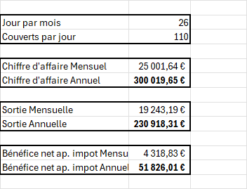
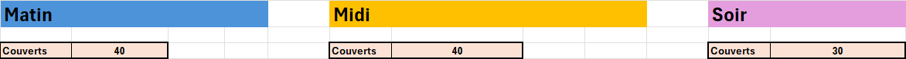
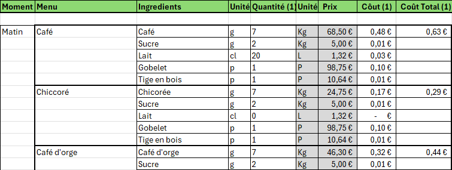
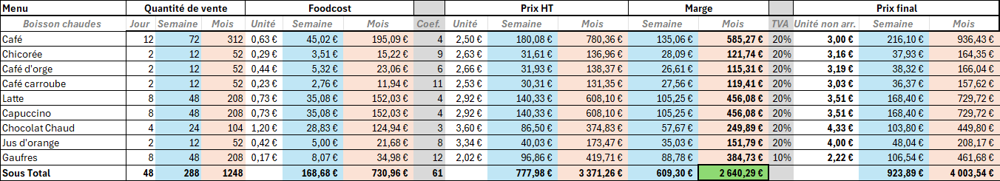
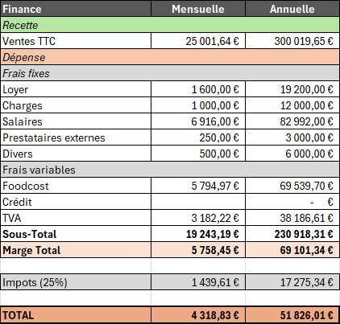
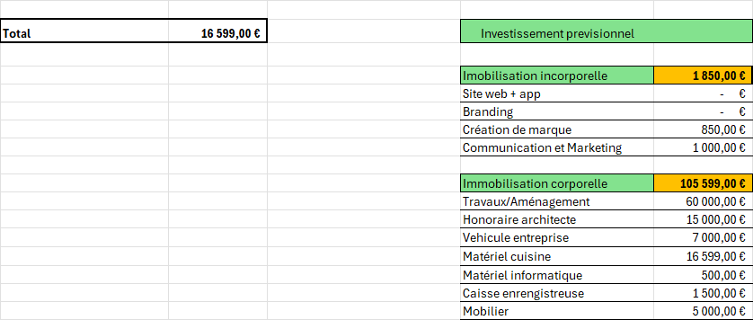
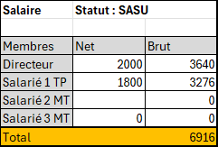
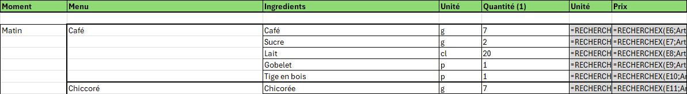

Excel — Modèle 03
L'Appartement — investissement, financement et besoin en fonds de roulement
Exercice de modélisation financière : bâtir le plan d'investissement et de financement d'un café-restaurant multi-moments, calculer le besoin en fonds de roulement et vérifier l'équilibre prévisionnel de l'exploitation. L'Appartement est un nom de marque inventé.
Contexte
Un dossier d'ouverture se joue sur deux équations : ce qu'il faut investir au départ et ce que l'exploitation dégagera ensuite. L'objectif était de relier, dans un même classeur, les hypothèses d'exploitation, le coût matière des produits, le plan de financement et le bilan prévisionnel, afin de mesurer l'équilibre entre recettes, dépenses et besoin de trésorerie.
Méthode
Le classeur regroupe plusieurs blocs reliés entre eux :
- paramètres d'exploitation : jours d'ouverture par mois et couverts par jour, répartis entre les trois moments de la journée ;
- menu et base d'articles : chaque produit de la carte est relié à ses ingrédients et à leurs prix d'achat, eux-mêmes issus de catalogues fournisseurs réels (Rungis Market, Aventure Bio, Mozzalat, Compos-table) ;
- grille de ventes : quantités par jour, semaine et mois, coefficient appliqué, prix de vente HT et TTC, et marge par produit ;
- bilan prévisionnel : recettes, frais fixes, frais variables, impôt et résultat net ;
- plan de financement : investissement matériel, immobilisations incorporelles et corporelles, besoin en fonds de roulement et ressources ;
- personnel : masse salariale selon le statut de la société ;
- analyse des données par deux tableaux croisés dynamiques.
Le modèle est relié à un classeur externe de données, afin d'éviter de ressaisir les prix des articles.

Résultat
Les tableaux ci-dessous reprennent la synthèse prévisionnelle et les hypothèses de fréquentation issues du modèle (26 jours d'ouverture par mois).
| Indicateur | Mensuel | Annuel |
|---|---|---|
| Chiffre d'affaires | 25 001,64 € | 300 019,65 € |
| Sorties (dépenses totales) | 19 243,19 € | 230 918,31 € |
| Bénéfice net après impôt | 4 318,83 € | 51 826,01 € |
| Moment | Couverts par jour |
|---|---|
| Matin | 40 |
| Midi | 40 |
| Soir | 30 |
| Total | 110 |
Captures du modèle







Fonctions et formules utilisées
Le classeur combine recherche, conditions, agrégation et lecture de données :
RECHERCHEX— récupération, pour chaque ingrédient, du marché d'achat, de l'unité et du prix dans la base d'articles.SI— application de conditions dans le calcul des ventes et des coefficients.SOMME— agrégation des coûts matière, des quantités et des totaux d'exploitation.ARRONDI— arrondi des prix et des coefficients d'exploitation.LIEN_HYPERTEXTE— création de liens cliquables dans le classeur.- Tableaux croisés dynamiques — 2 analyses croisées issues du modèle : nombre d'articles par catégorie, puis quantités et coûts par semaine et par mois. Ces vues s'appuient sur la base d'articles et de commandes, non publiée en capture afin de ne pas exposer les données fournisseurs.
Ce que cela démontre
Construction d'un dossier d'investissement complet : plan d'investissement, besoin en fonds de roulement, financement et prévisionnel d'exploitation reliés entre eux. Lecture d'un dossier financier de bout en bout, du chiffre d'affaires prévisionnel au résultat net, et analyse des données par tableaux croisés dynamiques.